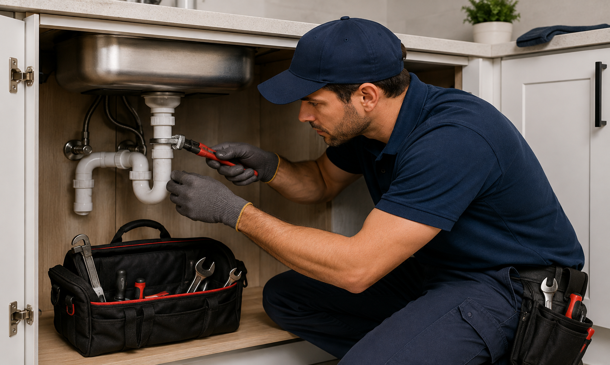
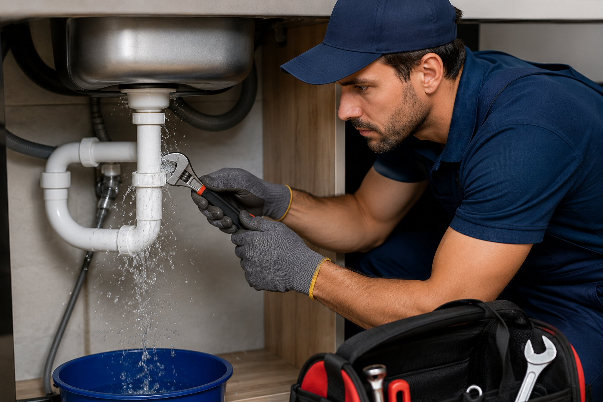
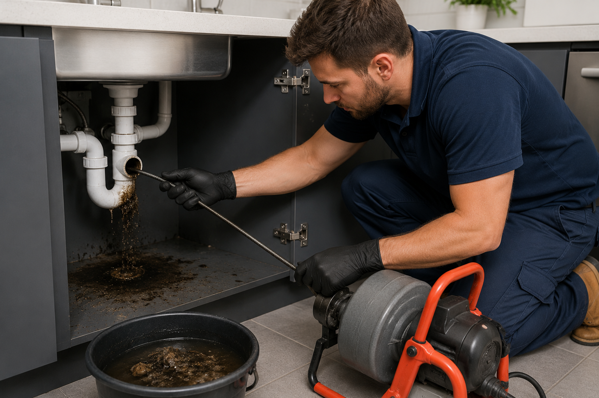
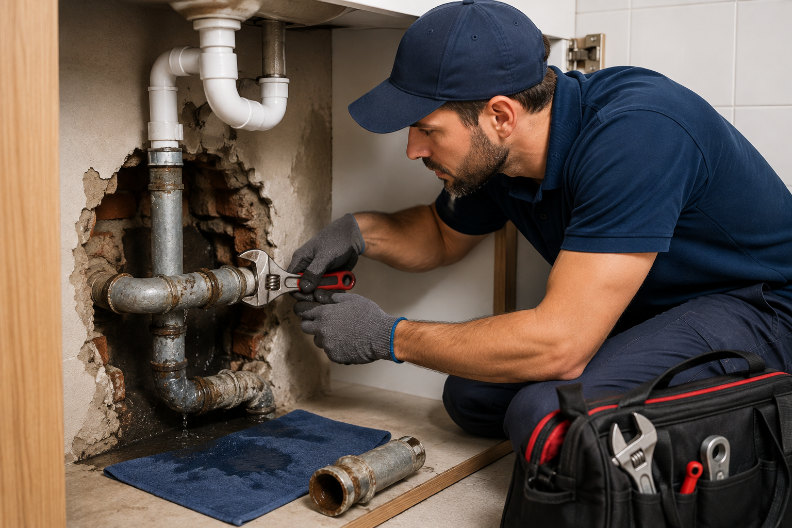
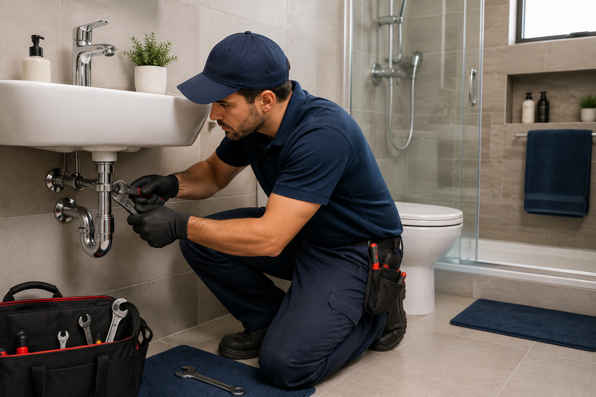
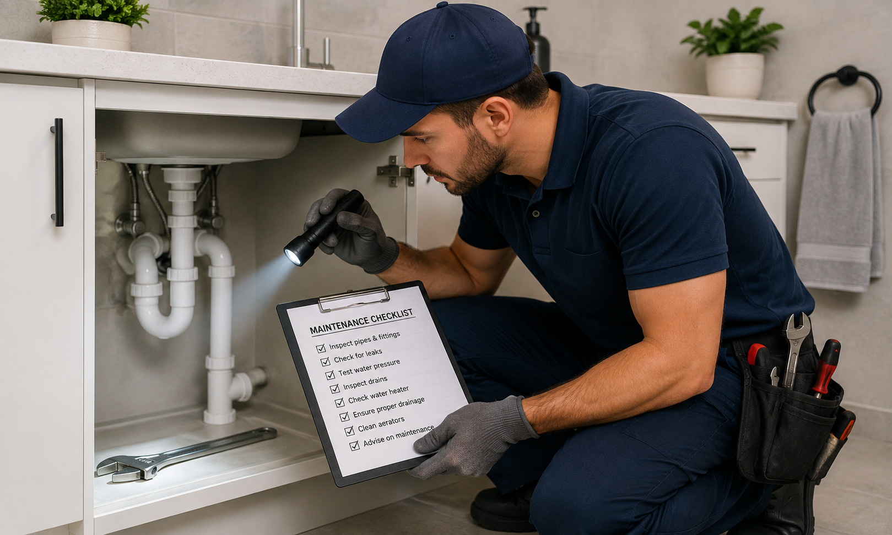

Plumbing Repairs
Assistance with common household plumbing problems and repairs.
Request ServiceDurban HomeFix Plumbing provides reliable plumbing solutions for households in Durban and surrounding areas. Explore our services below to find the assistance you need.

Assistance with common household plumbing problems and repairs.
Request Service
Help with identifying and repairing household plumbing leaks.
Request Service
Drainage assistance to help clear blocked household drains.
Request Service
Repair assistance for damaged or leaking household pipes.
Request Service
Plumbing assistance for bathroom fixtures and household fittings.
Request Service
Regular maintenance solutions to help keep household plumbing working properly.
Request ServiceWe provide plumbing services throughout Durban and surrounding areas.
Explore examples of plumbing services and work.

Find answers to some common questions about our plumbing services.
We provide plumbing repairs, leak repairs, blocked drain assistance, pipe repairs, bathroom plumbing and plumbing maintenance.
We provide plumbing services throughout Durban and surrounding areas.
Visit our enquiry page and complete the enquiry form with your contact details and plumbing requirements.
Yes. Visit our contact page to find our contact information and submit your message.
Contact Durban HomeFix Plumbing or submit an enquiry about your plumbing requirements.
Make an Enquiry